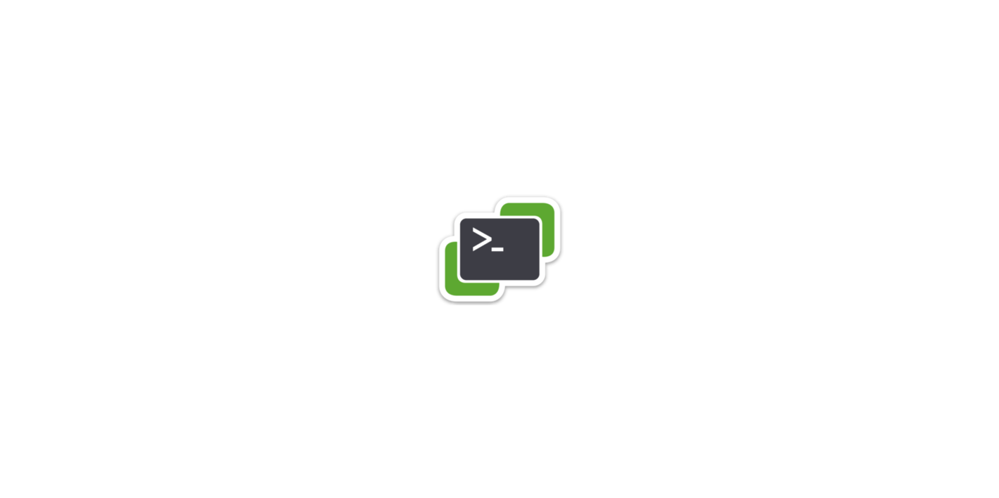
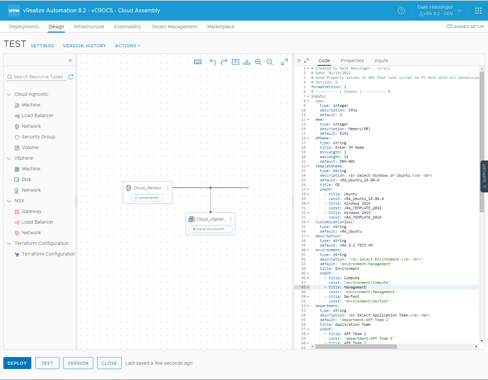
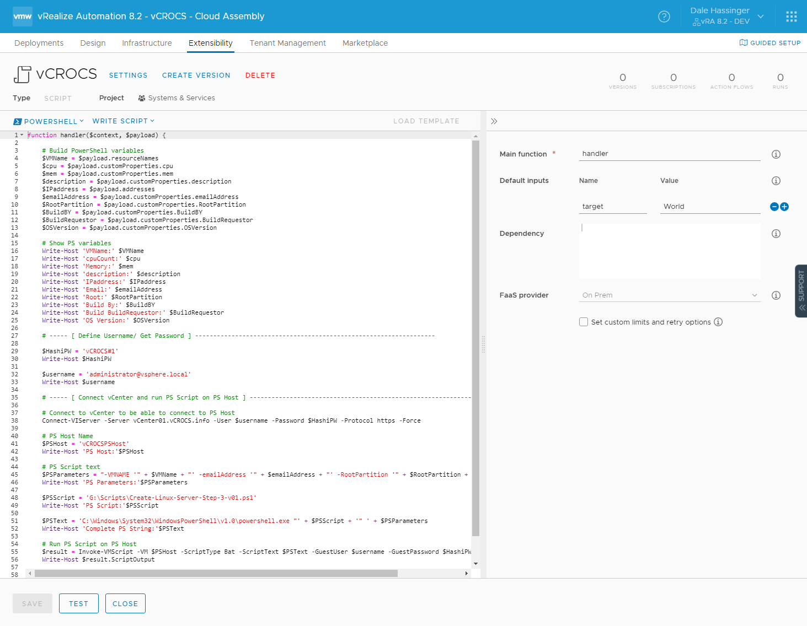
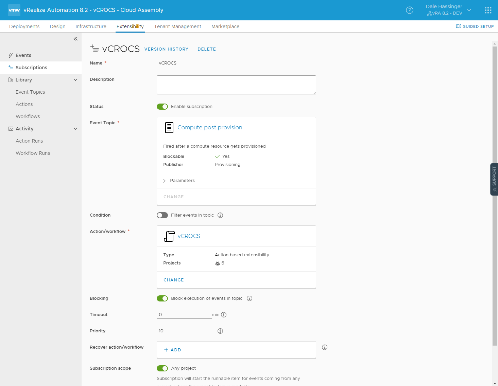

How to use PowerShell Modules with vRA 8.2

Options to use PowerShell Modules
I like to review VMware vRA (vRealize Automation) 8.2 as a Microsoft Windows Server Admin. Most of the reviews you see are creating Linux VMs and customizing the OS using tools for Linux. I create Windows/Linux VMs and customize the OS using a new feature added to vRA 8.x, Action Based Extensibility (ABX) with PowerShell.
In my vRA 7.6 environment, I use a PowerShell Host to run processes and on the PowerShell Host is where I install all the PS Modules that I use. When I started looking at how to use PowerShell with vRA 8.2 the one item that I needed to understand was how to use PowerShell Modules. VMware does have a Blog Post on how to include PowerShell modules with ABX Actions/vRO Work Flows - Click Here to see the Blog Post. After doing some testing and reviewing my options I decided to continue to use a PowerShell Host with vRA 8.2. What this allows me to do is use the same exact PowerShell Host for 7.6 and 8.2. The existing PS scripts that I have also work with both 7.6 and 8.2. No changes to any scripts and the PS Host. I like how VMware included PS as an options for all scripts within vRA 8.2. Hopefully in the future VMware will allow you to install your own PS Modules directly in the vRA Appliance. The one item that some people may not like about this setup is it does require an additional Windows Server that a standard vRA setup does not require. But to be able to use an existing Windows PS Host that can be shared between vRA 7.6 and 8.2 until I get my environment to 100% vRA 8.2 also has it positives. With Automation there is always many ways to complete the same task.
I wrote a Blog Post previously that describes how to pass Cloud Template inputs/properties to ABX Actions. This Post is really using that same technique but instead of only running an ABX Action, this ABX Action Script is passing the inputs/customproperties onto a PowerShell Host. Here is link to previous post: VREALIZE AUTOMATION 8.2 - POWERSHELL ABX. By passing the custom properties as parameters to a PS Host I can also use PS Modules to connect to SQL servers and many other options. Basically any PS Module that is available can be used.
Details on how to use a ABX Script with a PowerShell Host:
- Create a Cloud Template. (See included yaml code and screen shot).
- Create inputs for the parameters you need to send to a PS script that will run on the PS Host. The inputs are the values that are used for the resource/properties. (See included yaml code)
- Create Properties in the resources section of the yaml for the inputs you just created. These properties will be the parameters that get passed to the PS Script. The properties get passed to the ABX script using $payload. (See included PS code)
-
Step 2:
- Create a PowerShell ABX Action. (See included PS code and screen shot)
- To get the custom properties from the Cloud Template you need to use $payload.
- $payload.customProperties."Properties Name" is how you get the values from the $payload.
- You can assign the custom properties to a variable within the ABX PS code.
- I use Invoke-VMScript to run the PS Script on the PS Host because my environment is also a Zero Trust Environment. Invoke-VMScript allows me to run PS scripts on remote servers without opening ports to the remote servers.
-
Step 3:
- Create a Subscription. See Screenshot.
- The subscription is want runs the ABX scripts.
- A subscription can be Fired before or after a compute resource gets provisioned. I create a subscription for both in my environment.
- Within the subscription is where you define which ABX script is run. If you would want to string several ABX scripts together, the subscription could also run a ABX Flow.
Sample Code and Screen Shots:
Cloud Template:

The properties under resources in the yaml code will be used like parameters in a PS Script. Since I have a background in PowerShell that is how I am using the properties. When you deploy the Cloud Template, the values entered that I defined will not be used until the ABX script runs. The ABX Script will run after the subscription is triggered. The values will be passed from the Cloud Template to the ABX Script using $payload. Just like passing parameters to a PS script.
Click to expand code:
# Created by Dale Hassinger - vCrocs.info
# Date: 01/14/2021
# Send Property Values to ABX Script that runs script on PS Host with all Zero Trust Permissions and Modules
# Version: 1
formatVersion: 1
# ---------- [ Inputs ] ---------- #
inputs:
cpu:
type: integer
description: CPUs
default: 2
mem:
type: integer
description: Memory(MB)
default: 8192
VMName:
type: string
title: Enter VM Name
minLength: 1
maxLength: 15
default: DBH-001
TemplateName:
type: string
description: <b> Select Windows or Ubuntu.</b> <br>
default: vRA_Ubuntu_18.04.4
title: OS
oneOf:
- title: Ubuntu
const: vRA_Ubuntu_18.04.4
- title: Windows 2016
const: vRA_TEMPLATE_2016
- title: Windows 2019
const: vRA_TEMPLATE_2019
CustomizationSpec:
type: string
default: vRA_Ubuntu
description:
type: string
default: vRA 8.2 TEST VM
environment:
type: string
description: '<b> Select Environment.</b> <br>'
default: 'environment:Management'
title: Environment
oneOf:
- title: Compute
const: 'environment:Compute'
- title: Management
const: 'environment:Management'
- title: DevTest
const: 'environment:DevTest'
department:
type: string
description: <b> Select Application Team.</b> <br>
default: 'department:APP Team 1'
title: Application Team
oneOf:
- title: APP Team 1
const: 'department:APP Team 1'
- title: APP Team 2
const: 'department:APP Team 2'
- title: APP Team 3
const: 'department:APP Team 3'
IP:
type: string
default: 192.168.86.200
emailAddress:
type: string
default: Dale.Hassinger@vCROCS.info
RootPartition:
type: integer
default: 20
BuildBY:
type: string
default: DaleHassinger
BuildRequestor:
type: string
default: KirkShaffer
OSVersion:
type: string
default: Ubuntu18044
# ---------- [ Resources ] ---------- #
resources:
Cloud_Network_1:
type: Cloud.Network
properties:
networkType: existing
address: '${input.IP}'
constraints:
- tag: '${input.environment}'
- tag: '${input.department}'
Cloud_vSphere_Machine_1:
type: Cloud.vSphere.Machine
properties:
image: '${input.TemplateName}'
flavor: std
cpu: '${input.cpu}'
mem: '${input.mem}'
customizationSpec: '${input.CustomizationSpec}'
emailAddress: '${input.emailAddress}'
RootPartition: '${input.RootPartition}'
BuildBY: '${input.BuildBY}'
BuildRequestor: '${input.BuildRequestor}'
OSVersion: '${input.OSVersion}'
constraints:
- tag: '${input.environment}'
networks:
- network: '${resource.Cloud_Network_1.id}'
assignment: static
address: '${input.IP}'
name: '${input.VMName}'
description: '${input.description}'ABX Action Script:

In my PowerShell code I am using Write-Host to help show how the Cloud Template passes values to the ABX Action using the $payload. I use the code to troubleshoot and understand how it is working. I am able to take values from the payload customProperties and assign to variables. The customProperties are defined in the Cloud Template yaml code as resources/properties. I can then make decisions in the code based on these values. For production the write-host lines could be removed.
Click to expand code:
function handler($context, $payload) {
# Build PowerShell variables
$VMName = $payload.resourceNames
$cpu = $payload.customProperties.cpu
$mem = $payload.customProperties.mem
$description = $payload.customProperties.description
$IPaddress = $payload.addresses
$emailAddress = $payload.customProperties.emailAddress
$RootPartition = $payload.customProperties.RootPartition
$BuildBY = $payload.customProperties.BuildBY
$BuildRequestor = $payload.customProperties.BuildRequestor
$OSVersion = $payload.customProperties.OSVersion
# Show PS variables
Write-Host 'VMName:' $VMName
Write-Host 'CPU:' $cpu
Write-Host 'Memory:' $mem
Write-Host 'Description:' $description
Write-Host 'IPaddress:' $IPaddress
Write-Host 'Email:' $emailAddress
Write-Host 'Root:' $RootPartition
Write-Host 'Build By:' $BuildBY
Write-Host 'Build BuildRequestor:' $BuildRequestor
Write-Host 'OS Version:' $OSVersion
# ----- [ Define Username/ Get Password ] ------------------------------------------------------------------
$HashiVaultPW = 'vCROCS#1'
Write-Host $HashiVaultPW
$username = 'administrator@vsphere.local'
Write-Host $username
# ----- [ Connect vCenter and run PS Script on PS Host ] ------------------------------------------------------------------
# Connect to vCenter to be able to connect to PS Host
Connect-VIServer -Server vCenter01.vCROCS.info -User $username -Password $HashiVaultPW -Protocol https -Force
# PS Host Name
$PSHost = 'vCROCSPSHost'
Write-Host 'PS Host:'$PSHost
# PS Script text
$PSParameters = "-VMNAME '" + $VMName + "' -emailAddress '" + $emailAddress + "' -RootPartition '" + $RootPartition + "'"
Write-Host 'PS Parameters:'$PSParameters
$PSScript = 'G:\Scripts\Create-Linux-Server-Step-3-v01.ps1'
Write-Host 'PS Script:'$PSScript
$PSText = 'C:\Windows\System32\WindowsPowerShell\v1.0\powershell.exe "' + $PSScript + '" ' + $PSParameters
Write-Host 'Complete PS String:'$PSText
# Run PS Script on PS Host
$result = Invoke-VMScript -VM $PSHost -ScriptType Bat -ScriptText $PSText -GuestUser $username -GuestPassword $HashiVaultPW
Write-Host $result.ScriptOutput
return $LASTEXITCODE
}Subscription:

- vRA 7.6 and 8.2 can share the same PS Host and Scripts.
- A lot of the PowerShell code and logic I use in vRA 7.6 will be able to be reused/shared.
- Using a PS Host does require an additional VM.
- Within ABX scripts I have always changed the default "Custom limits and retry options". I set the "Memory Limit" to 1024 and "Timeouts" to 900.
- Anytime I speak to others about Automation the one item I stress is there is no right way or wrong way to accomplish your tasks. Build on the skills that your Team already has. The environment I work in is 90% Windows Servers so we use PowerShell a lot. That is why I needed to be able to use all the PS Modules that I have installed on the PS Host.